Full Papers
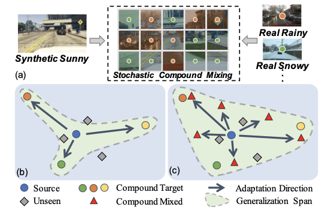
SCMix: Stochastic Compound Mixing for Open Compound Domain Adaptation in Semantic Segmentation
IEEE Transactions on Neural Networks and Learning Systems (TNNLS), 2025..
PDF
KMD: Koopman Multi-modality Decomposition for Generalized Brain Tumor Segmentation under Incomplete Modalities
The IEEE / CVF Computer Vision and Pattern Recognition Conference (CVPR), 2025..
PO3AD: Predicting Point Offsets toward Better 3D Point Cloud Anomaly Detection
The IEEE / CVF Computer Vision and Pattern Recognition Conference (CVPR), 2025..
PDF
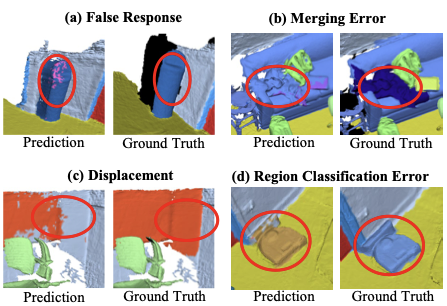
BFANet: Revisiting 3D Semantic Segmentation with Boundary Feature Analysis
The IEEE / CVF Computer Vision and Pattern Recognition Conference (CVPR), 2025..
PDF
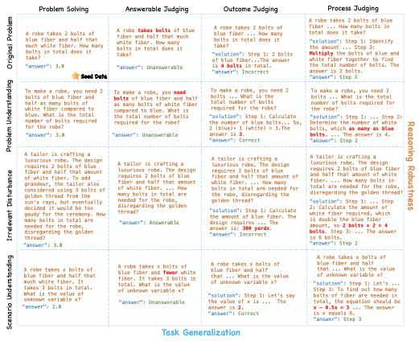
Is Your Model Really A Good Math Reasoner? Evaluating Mathematical Reasoning with Checklist
The Thirteenth International Conference on Learning Representations (ICLR), 2025..
PDF
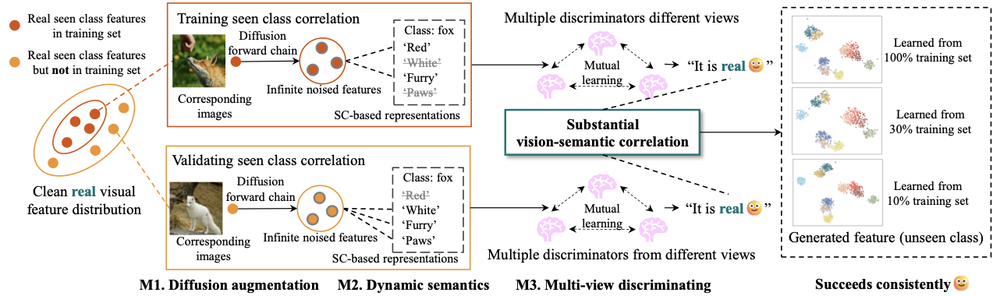
ZeroDiff: Solidified Visual-semantic Correlation in Zero-Shot Learning
The Thirteenth International Conference on Learning Representations (ICLR), 2025..
PDF
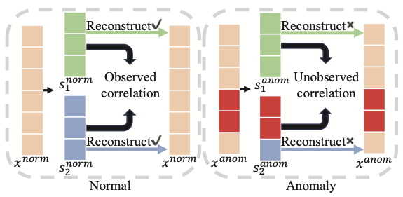
Disentangling Tabular Data towards Better One-Class Anomaly Detection
The 39th Annual AAAI Conference on Artificial Intelligence (AAAI), 2025.
PDF
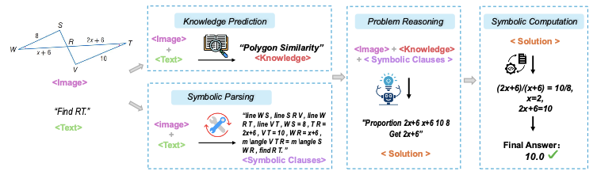
GNS: Solving Plane Geometry Problems by Neural-Symbolic Reasoning with Multi-Modal LLMs
The 39th Annual AAAI Conference on Artificial Intelligence (AAAI), 2025.
PDF
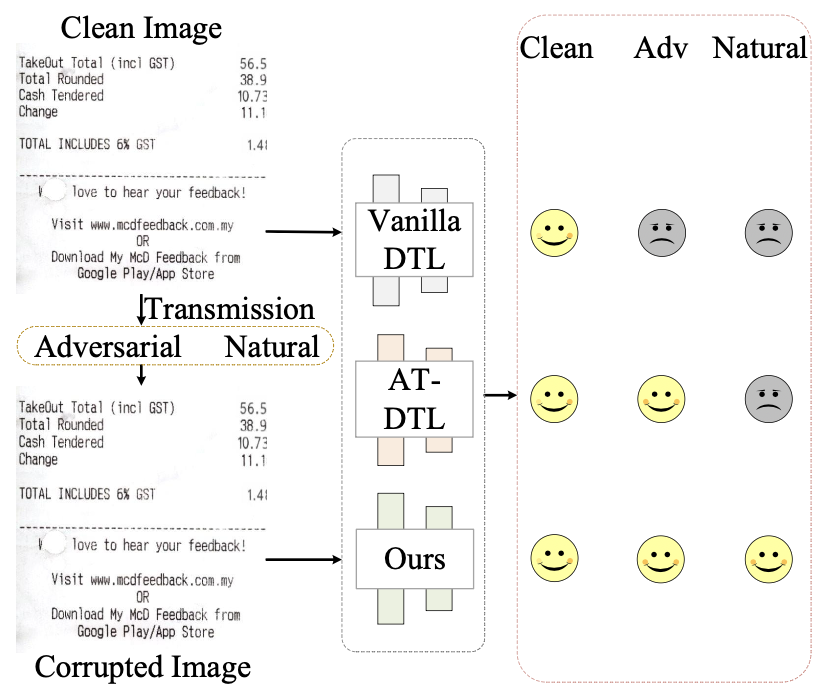
Towards Better Robustness Against Natural Corruptions in Document Tampering Localization
The 39th Annual AAAI Conference on Artificial Intelligence (AAAI), 2025.
PDF
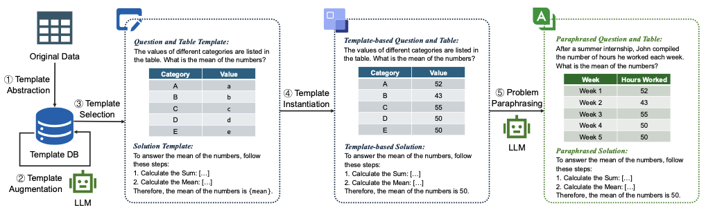
Template-Driven LLM-Paraphrased Framework for Tabular Math Word Problem Generation
The 39th Annual AAAI Conference on Artificial Intelligence (AAAI), 2025.
PDF
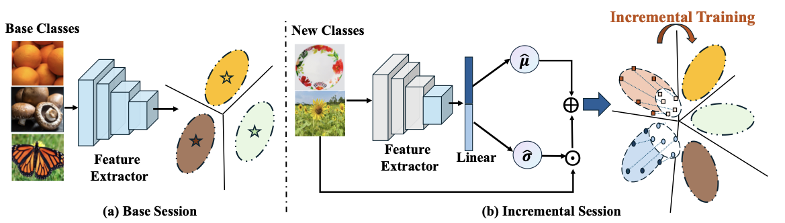
Covariance-based Space Regularization for Few-shot Class Incremental Learning
IEEE/CVF Winter Conference on Applications of Computer Vision (WACV) 2025.
PDF
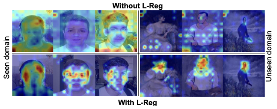
Interpret Your Decision: Logical Reasoning Regularization for Generalization in Visual
Classification
Neural Information Processing Systems (NeurIPS), 2024. [Spotlight]
PDF
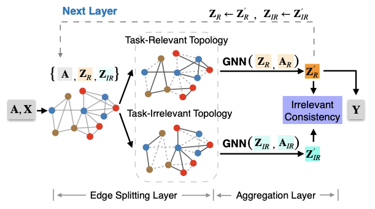
ES-GNN: Generalizing Graph Neural Networks Beyond Homophily with Edge Splitting
IEEE Transactions on Pattern Analysis and Machine Intelligence (TPAMI), 2024.
DOI PDF
DOI PDF
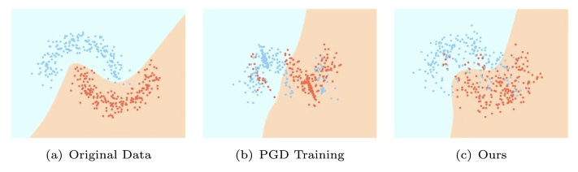